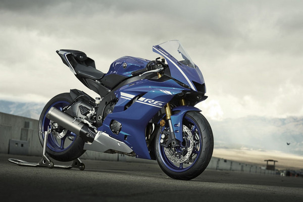
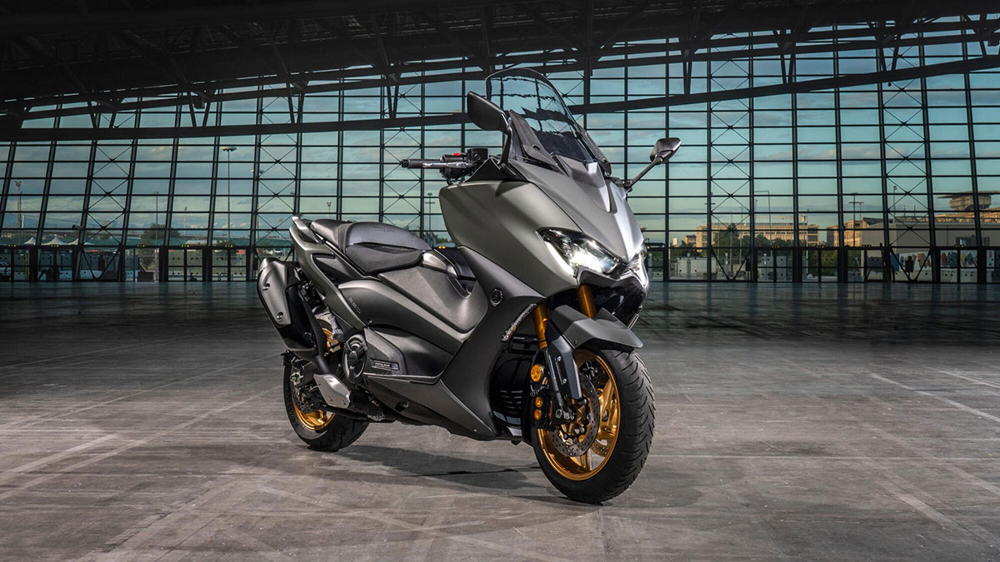
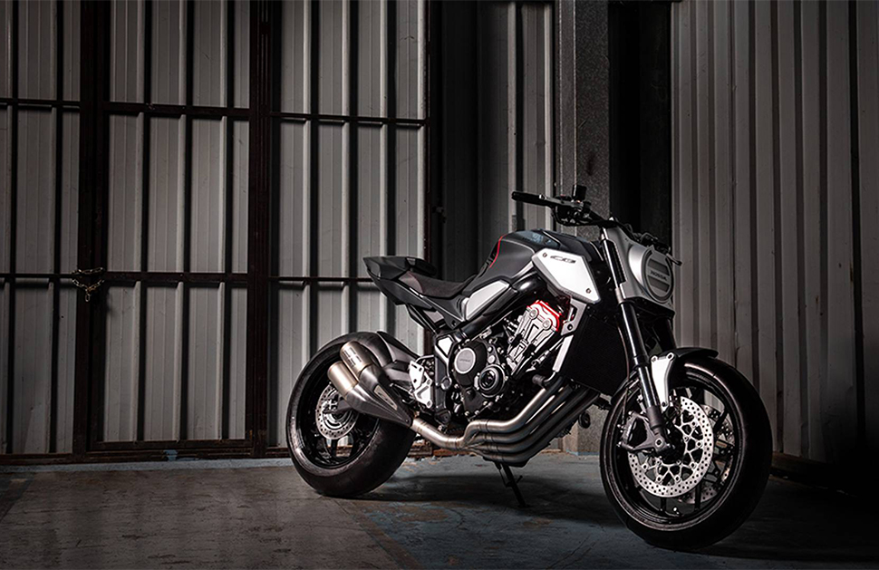

Heavy
Motorcycle

2021上半年
五大熱銷排行

YAMAHA YZF-R6
第五名是YAMAHA YZF-R6，已停產，在600cc跑車中算是最獨具個性，不用改就是一輛完完整整的賽車，動力曲線也與一般線性不同，低轉雖然沒力，但當轉速到了，動力就一次全部都給你釋放出來，然你竟情享受高轉帶來的加速、動力與興奮感，自停產前就是一輛超保值的車款，停產後新車的價格就亂了套，總結是一輛實力性能響噹噹擺在那的熱門跑車車款。
KAWASAKI Z900
第四名是KAWASAKI Z900，動力表現不錯，在9,500rpm時可達到125PS，兇悍的頭燈線條與帶有強烈侵略意圖的外觀，外觀方面在諸多車友中都呈現正面的評價，並配有科技配備，像是藍芽TFT全彩儀表板，顯示行車資訊外，也能提醒來電及簡訊，還可以連接APP獲得更多資訊，循跡系統與動力模式可調，也讓整輛車的配備更全面也更完善。


YAMAHA TMAX560
第三名是YAMAHA TMAX560，號稱「運動羊皇」，不但是通勤首選，在運動性能方面也是一般大羊無法比擬的，騎起來不像他的外型略顯笨重，而是靈活且操縱性極佳，在機能性方面也能載物、能載人騎乘感也很舒適，與運動性能取得平衡的結果下，載物能力略小於其他大羊，但還是可以滿足通勤族的裝載需求，更能達到想要偶爾熱血的激烈操駕。
HONDA CBR650R
第二名是HONDA CBR650R，相較一般純種仿賽，CBR650R騎乘姿勢更偏向街跑，以舒服的姿勢享受跑車的外觀，四缸聲浪更是令人亢奮，充足的動力加上高轉時的爆發力、動力延伸性也可圈可點，以售價和它所標配的部件來說，在同級仿賽車款中算是非常不錯的，易於操駕的特性也使許多人將此輛車作為自己第一輛重機牽回家。


HONDA CB650R
第一名是HONDA CB650R，四缸、配備好、cp值高，在同級距中幾乎沒有配備四缸的車種，用這樣的價格就能買到四缸車，這點對許多四缸迷來說非常超值，動力曲線偏向線性，易控制也好上手，滑動式離合器、全彩儀表板、全車LED等豐富的配備也讓CB650R穩坐銷售冠軍。